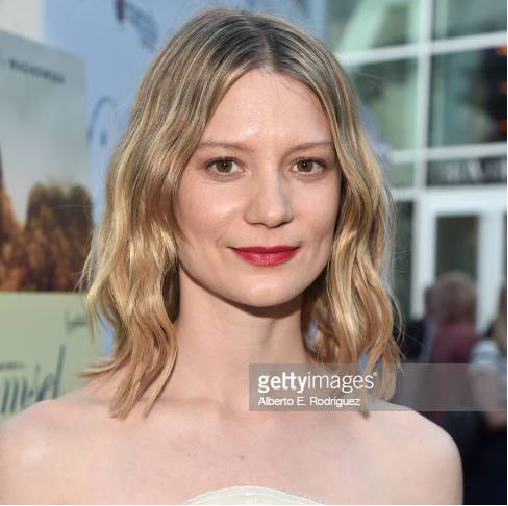
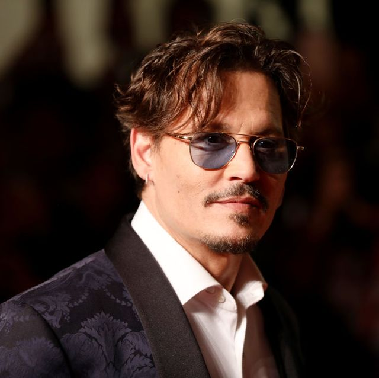
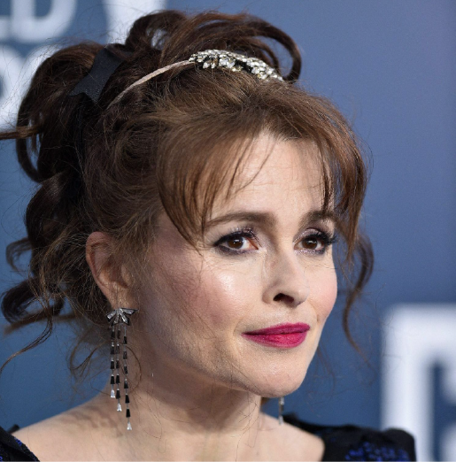
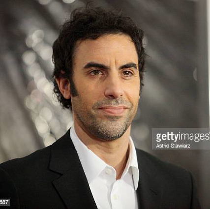
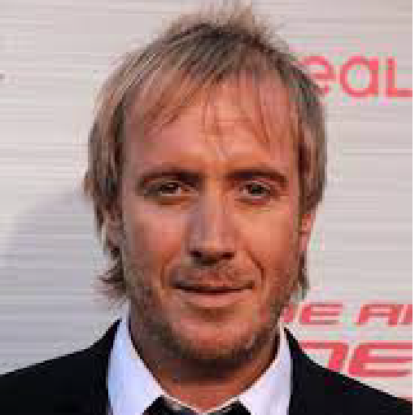
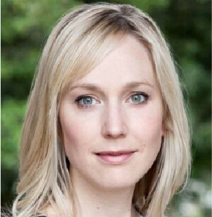
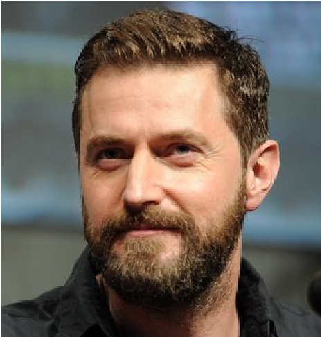
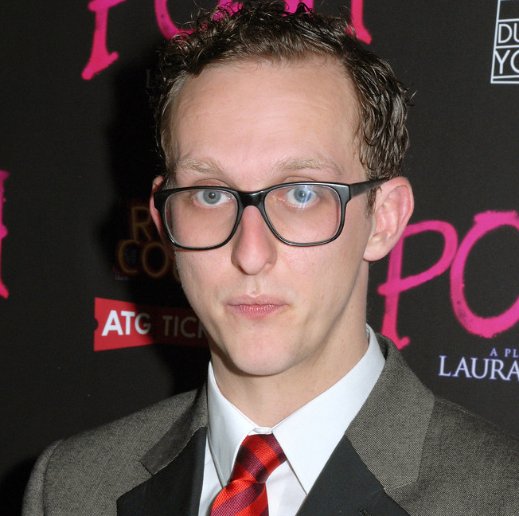

ALICE THROUGH LOOKING GLASS
CAST PRICINPAL

MIA WASIKOWSKA
Actriz australiana de ascendencia polaca, conocida por su papel protagonista en Alicia en el país de las maravillas y en En terapia, En julio de 2008, Wasikowska fue la elegida para interpretar a la protagonista de Alicia en el país de las maravillas.
JOHNNY DEPP
Es un actor, productor, guionista y músico estadounidense, omenzó su carrera en la película de terror A Nightmare on Elm Street de 1984 como Glen Lantz, una de las víctimas de Freddy Krueger, Sus películas más taquilleras han sido la saga Piratas del Caribe con más de 3,9 mil millones de dólares, seguida de Alicia en el país de las maravillas en donde interpreta a El Sombrerero Loco
ANNE HATHAWAY
Anne Jacqueline Hathaway es una actriz estadounidense, The Princess Diaries fue la primera de sus películas que se estrenó,The Princess Diaries fue la primera de sus películas que se estrenó, despues de dejar disney unos años de´spues decicio volver a la compañía; pero en unas condiciones completamente diferentes. En colaboración con uno de los grandes directores del cine estadounidense, Tim Burton, dio cuerpo a la Reina Blanca de Alicia en el país de las maravillas.
HELENA BONHAM
Una destacada actriz británica,Hizo su debut como actriz en una adaptación para televisión de A Pattern of Roses antes de obtener su primer papel como protagonista en Lady Jane uno de sus papeles mas famosos es el de la villana Bellatrix Lestrange en las películas de Harry Potter, tambien solia aprecer en las peliculas de tim burton quien ademas era suu pareja, interpretando a La Reina Roja en Alicia en el pais de las maravillas.
SACHA BARON
Actor, comediante, guionista y productor británico, trabajo incluye la voz del Rey Julián XIII en la serie de cine Madagascar (2005-2012) y su aparición en Sweeney Todd: The Demon Barber of Fleet Street (2007), en Hugo (2011) y en Les Misérables (2012), y coprotagonizó como Time en la secuela de fantasía Alice Through the Looking Glass.CAST SECUNDARIO

RHYS IFANS

HATTIE MORAHAN

RICHARD ARMITAGE
MATT LUCAS
